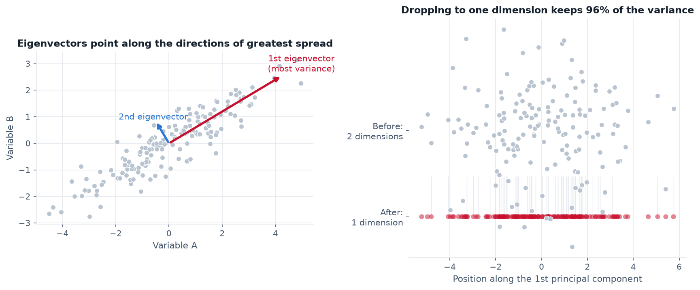
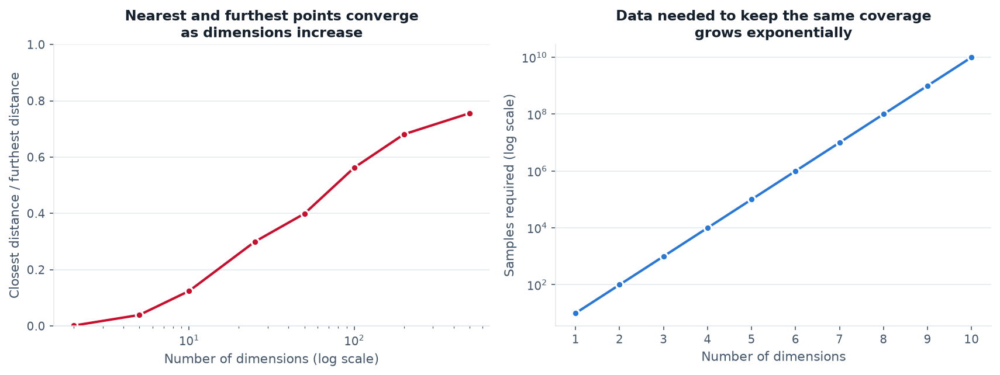
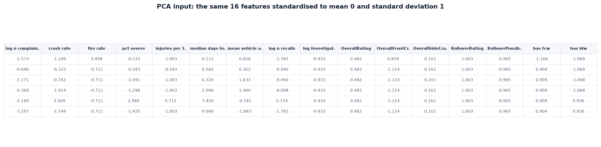
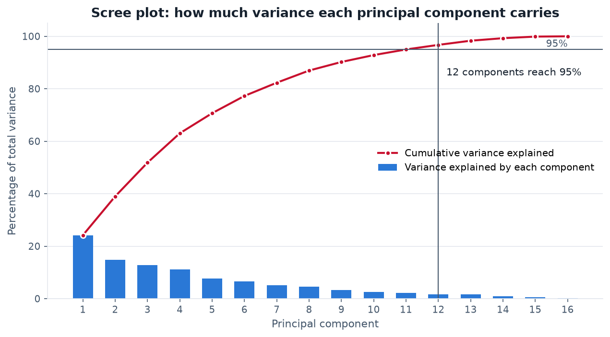
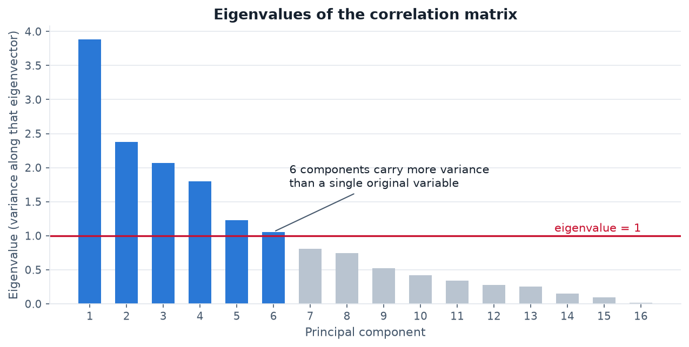
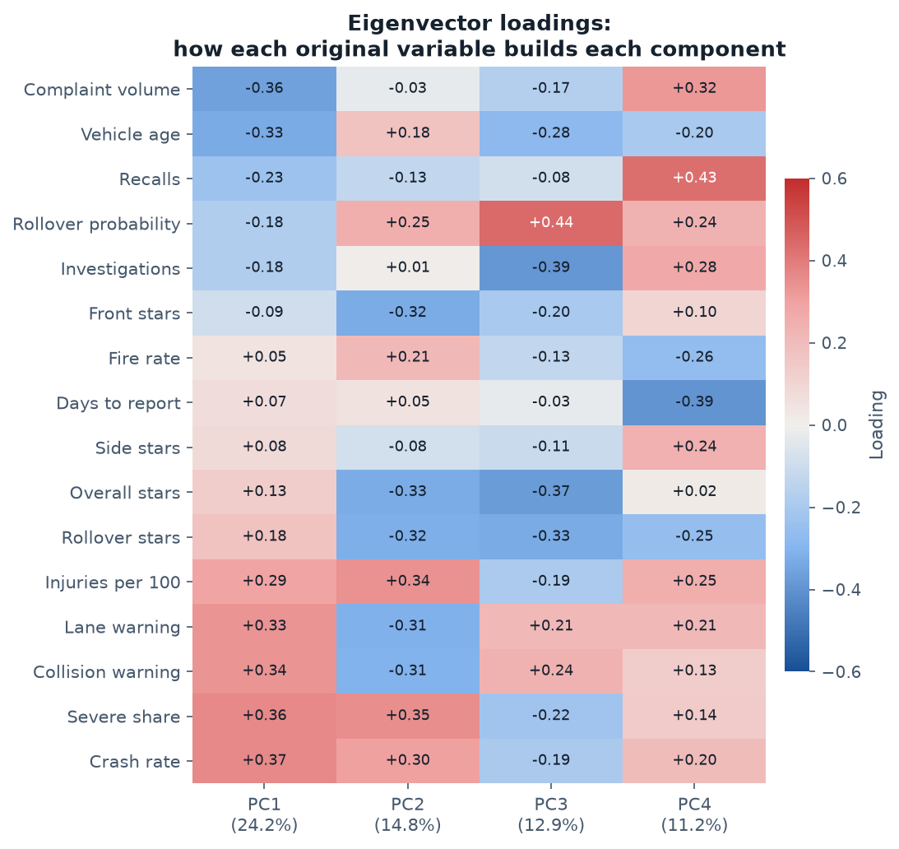
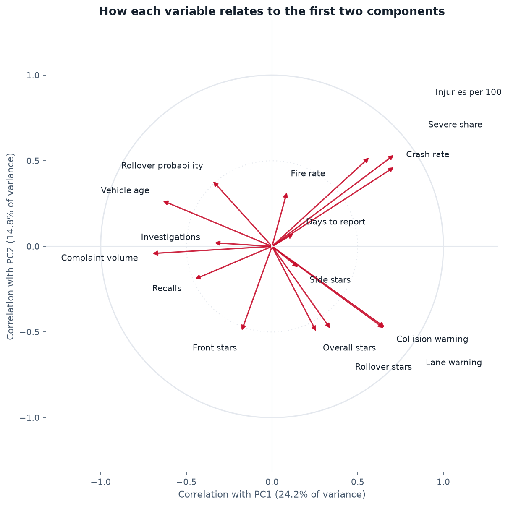
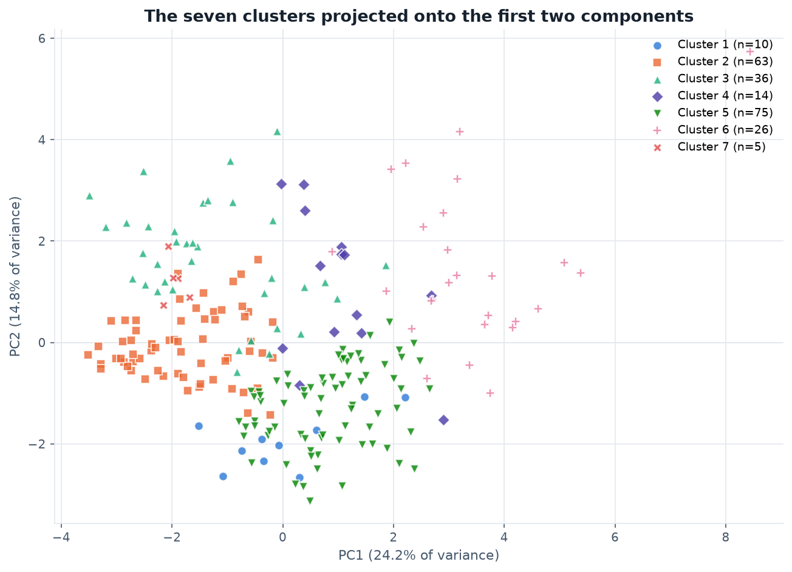

Principal Component Analysis
Sixteen separate safety measures describe each vehicle. The question here is whether they are really sixteen different things, or a handful of underlying patterns wearing sixteen names.
Overview
Principal Component Analysis takes a set of correlated measurements and rebuilds them as a new set of axes that are uncorrelated with one another and ordered by how much of the data's variation each one carries. The first principal component is the single direction through the data along which the points are most spread out. The second is the direction of greatest remaining spread that is perpendicular to the first, and so on. Each component is a weighted blend of all the original variables, with the weights, called loadings, saying how much each original measure contributes. Nothing is thrown away in the rotation itself. The reduction happens afterwards, when the later components, which carry little variation, are discarded.
Eigenvalues and eigenvectors sit underneath all of this. For the correlation matrix of the standardised data, an eigenvector is a direction that the matrix stretches without rotating, and its eigenvalue is how much stretching occurs. Translated into data terms, the eigenvectors are the candidate axes and the eigenvalues are the variance captured along each. Sorting the eigenvectors by their eigenvalues produces the principal components in order of importance, which is the whole mechanism. Because the input was standardised, each original variable contributes exactly 1 unit of variance, so an eigenvalue above 1 marks a component carrying more information than any single original measure did on its own.

Dimensionality reduction matters for three practical reasons. Visual inspection is limited to two or three dimensions, so a sixteen-dimensional dataset cannot be looked at directly without some projection. Many algorithms degrade as dimensions grow, because in high-dimensional space the distance to the nearest point and the distance to the furthest point converge, so "nearest" stops carrying much meaning, and distance-based methods such as the clustering in the previous section rest entirely on that meaning. And the data required to cover a space grows exponentially with its dimension, so a sample that comfortably describes two variables is sparse across sixteen. Correlated variables also make models unstable, since the model cannot tell which of two measures that move together is responsible for an effect.

Data Prep
PCA needs the same input shape as clustering: a purely numeric matrix with no labels. The same 16 features and the same 229 vehicles are used, prepared identically, so that the two sections are directly comparable. Standardisation is even more important here than it was for clustering. PCA finds directions of maximum variance, and variance depends on units, so an unstandardised variable with a wide numeric range would capture the first component purely by being measured on a larger scale. Standardising every column to mean 0 and standard deviation 1 means the analysis runs on the correlation matrix rather than the covariance matrix, and every variable gets an equal vote.

Data and code. PCA input: pca_sample.csv · Eigenvalues: pca_eigenvalues.csv · Loadings: pca_components.csv · Vehicle scores: pca_scores.csv
Code: pca_analysis.py —
Python, using sklearn.decomposition.PCA with
StandardScaler.
Code
The analysis is in pca_analysis.py.
StandardScaler centres and scales the matrix, then
sklearn.decomposition.PCA is fitted with all components retained so
the full eigenvalue spectrum is available for the scree plot. Eigenvalues are
read from explained_variance_ and the eigenvectors from
components_. The correlation circle multiplies each loading by the
square root of its eigenvalue, which converts loadings into correlations between
the original variable and the component and is what bounds every arrow inside
the unit circle.
Results
How much structure is there?


| Measure | Result | Reading |
|---|---|---|
| Variance in PC1 | 24.2% | No single dominant pattern |
| Variance in PC1 + PC2 | 39.0% | A two-dimensional plot shows well under half the picture |
| Eigenvalues above 1 | 6 | Six components beat a single original variable |
| Components for 90% variance | 9 of 16 | Only a 44% reduction in dimensions |
| Components for 95% variance | 12 of 16 | Compression is poor |
What the components mean


Reading the two leading components:
- PC1 (24.2%) separates an older, high-volume, unassisted fleet from a newer, assisted one with a higher per-complaint harm rate. Complaint volume (−0.36), vehicle age (−0.33) and recalls (−0.23) load negatively, while crash rate (+0.37), severe share (+0.37) and the two driver-assistance indicators (+0.34, +0.33) load positively. It is essentially an age-and-exposure axis.
- PC2 (14.8%) sets laboratory ratings directly against real-world harm. Overall stars (−0.33), front-crash stars (−0.32) and rollover stars (−0.32) oppose severe share (+0.35), injuries per 100 (+0.34) and crash rate (+0.30). This component is the central question of the whole project rendered as a single axis.

Conclusions
The most informative result is a negative one. This data does not reduce well. Nine of the sixteen components are needed to retain 90% of the variance, and the leading component carries under a quarter of it. For comparison, a dataset with strong underlying structure often puts 60–80% into its first two or three components. The sixteen safety measures are therefore close to sixteen genuinely separate pieces of information, not a few latent factors in disguise. That has a direct practical consequence: there is no small number of hidden dimensions that a safety score could summarise, which helps explain why a single star rating leaves so much unsaid.
The second component is the more pointed finding. It loads crash-test ratings against realised harm with opposite signs, meaning the laboratory measurement and the ownership record are not merely different, they vary in opposition along the strongest axis on which both appear. In the correlation circle the star-rating arrows and the severity arrows sit nearly perpendicular to complaint volume and point away from each other. This is the Module 1 observation of a weak correlation between star rating and complaint measures, now shown as geometry rather than a single coefficient.
PCA and clustering also corroborate each other. The seven clusters, fitted on all sixteen dimensions, remain visibly separated when projected onto just two components, which is evidence that the structure found earlier is real rather than an artefact of the distance metric. Equally, the fact that those clusters overlap in the centre of the projection matches the weak silhouette scores: both methods, by different routes, describe a dense continuum with distinctive behaviour only at the edges.
For the supervised modules that follow, the practical implication is that aggressive dimensionality reduction would discard real information. Retaining six components on the Kaiser criterion, or nine for 90% of the variance, is defensible; compressing to two or three for convenience would not be.